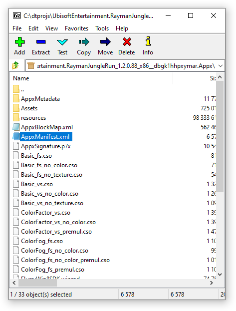
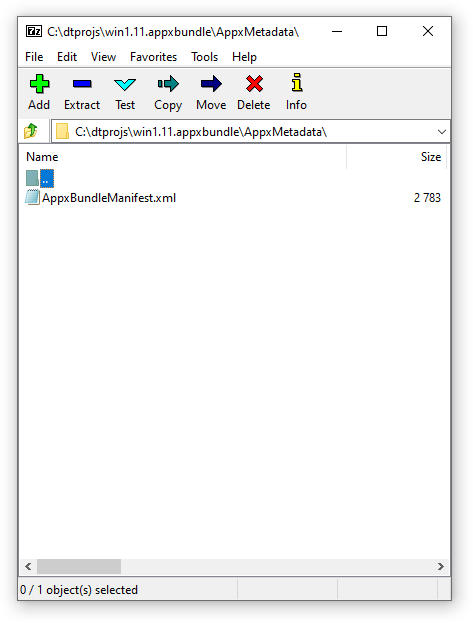
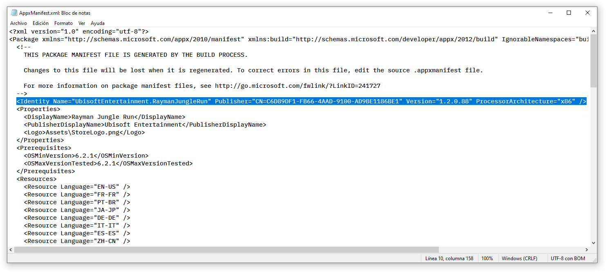
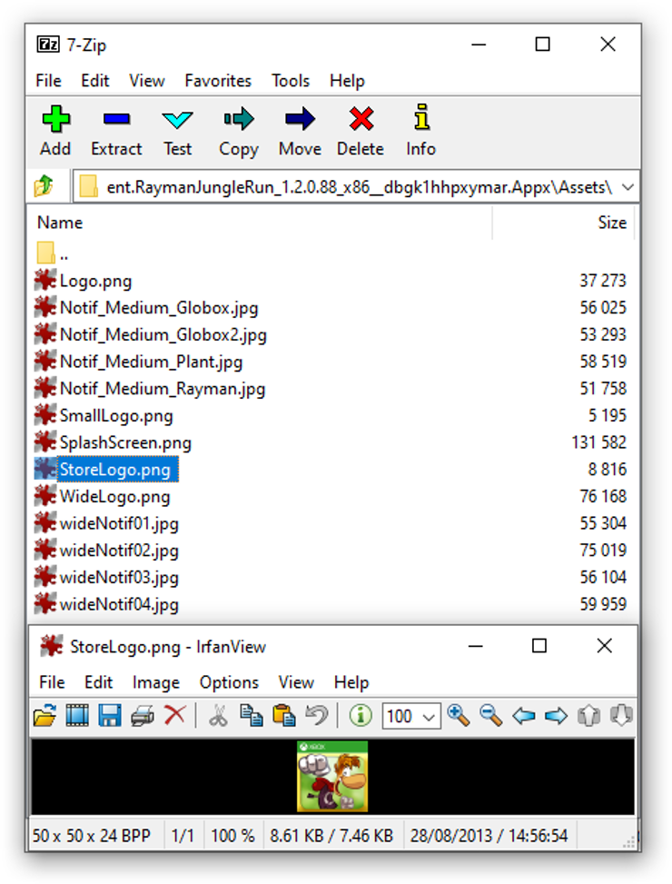
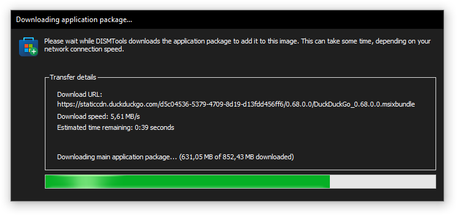
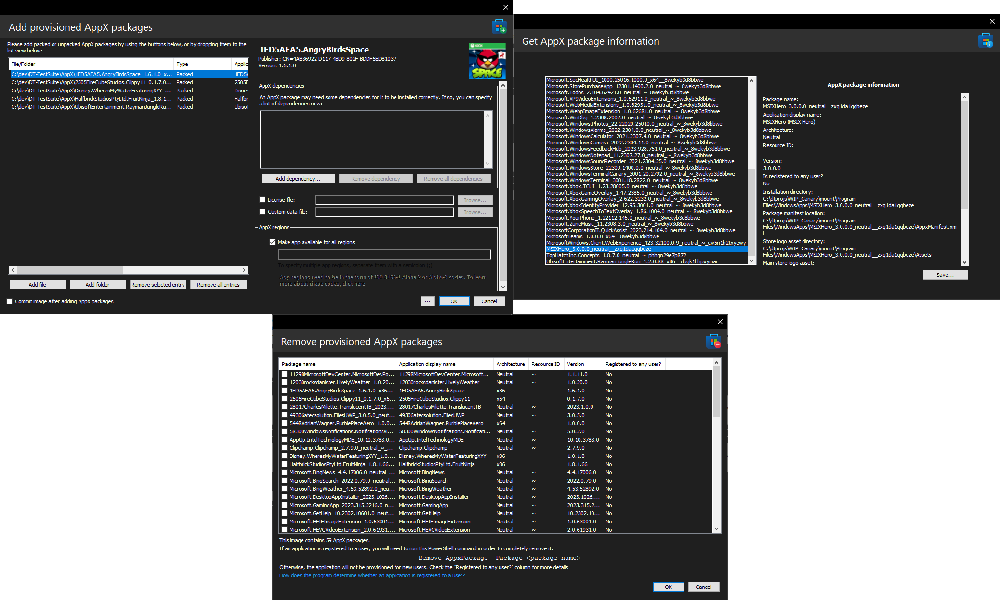

Overview of AppX packages
With Windows 8, Microsoft introduced a new kind of applications, Metro-style apps, that work with the operating system's new interface and design guidelines. These apps are packed in the AppX format, and can be deployed with DISM or with the PowerShell cmdlets provided by the Appx module.
DISMTools 0.2 introduced AppX package servicing, which allows you to add and remove these applications to and/or from Windows images and/or online installations.
Inside an AppX package
NOTE: this information is based on how applications are packed in the MSIX format, but this also applies to AppX packages. An overview of the MSIX packaging format can be accessed here. However, this information focuses on more technical things about these packages
This is the overall structure of an AppX package:

Source: Microsoft
However, the placement of some files varies depending on the format of the application:
.appxand.msixpackages contain the manifest on the root of the package, asAppxManifest.xml

.appxbundleand.msixbundlepackages store the manifest asAppxBundleManifest.xml, under theAppxMetadatadirectory

We are interested in the manifest file because it provides information about the application: its name, its publisher info, its version and, most importantly, its dependencies.
NOTE: if you've ever stumbled upon an .eappx or .emsix package, these cannot be opened or deployed through DISM, and need to be deployed using the Add-AppxPackage cmdlet
Let's look at a manifest file. This is the manifest file of Rayman Jungle Run:

If you can't read the selected text, here it is in code view:
<Identity Name="UbisoftEntertainment.RaymanJungleRun" Publisher="CN=C6D89DF1-FB66-4AAD-9100-AD9BE1186BE1" Version="1.2.0.88" ProcessorArchitecture="x86" />
This is the information you'll see when adding AppX packages with DISMTools:
The aforementioned line of XML code can be located on line 3 of the manifest, or on line 10 if a comment begins on line 3.
Now, how can DISMTools detect the store logo asset? By using the manifest file. Shortly after the XML code mentioned, a <Properties> tag begins, which contains information about the package display name (or how it will be shown on the start menu), the display name of the publisher, and the location of the store logo asset. Based on the last property, DISMTools goes through the AppX package and extracts the store logo asset, if it can. Otherwise, it will show a generic icon.

The location of the store logo asset also varies depending on the format of the application. In .appxbundle and .msixbundle packages, it is stored in another AppX package inside its parent package, in which the store logo asset can be extracted from the same location.
With the store logo asset on hand, DISMTools copies it to a store logo asset cache, so that it doesn't extract the asset again if it exists in the cache.
App Installer files
At some point you may run into this type of package and wonder what it is. App Installer files are XML files that declare the download URL for the main package (which is usually a bundle file). Let's look at them:
INFO: you can view the structure of these files in any text editor, like Notepad
What we're interested in is the <MainBundle> section, which defines the package name, publisher, version, and the main package download URL. Here is an example:
<MainBundle Name="Microsoft.WinDbg" Version="1.2306.12001.0" Publisher="CN=Microsoft Corporation, O=Microsoft Corporation, L=Redmond, S=Washington, C=US" Uri="https://windbg.download.prss.microsoft.com/dbazure/prod/1-2306-12001-0/windbg.msixbundle" />
The Uri property is what matters. DISMTools versions from 0.3.2 onwards read these files, detect a URL, and perform a file download.

You can view the reference of App Installer files here.
Available tasks
- Adding provisioned AppX packages
- Getting AppX package information
- Removing provisioned AppX packages
